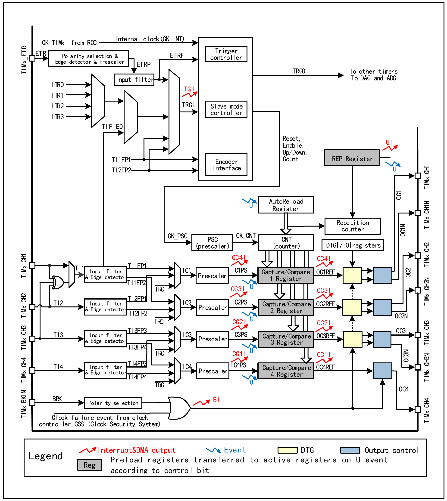
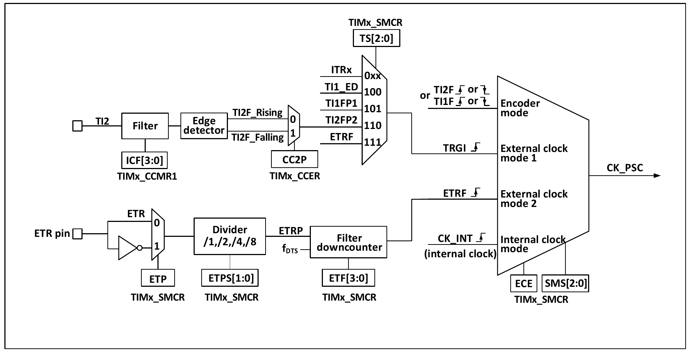
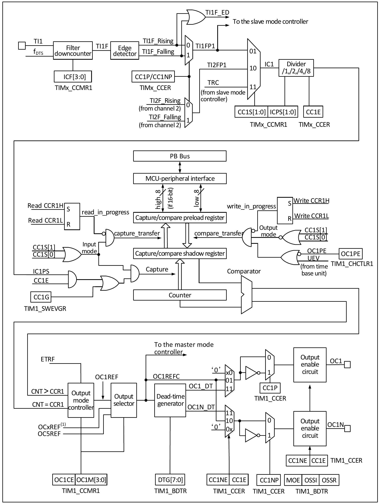
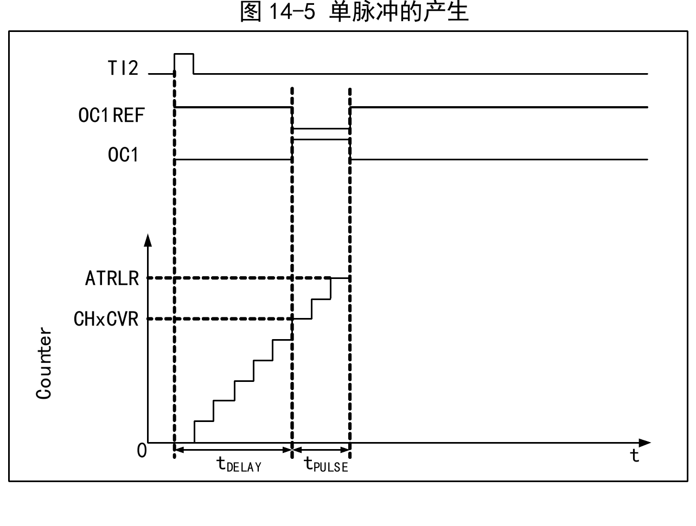
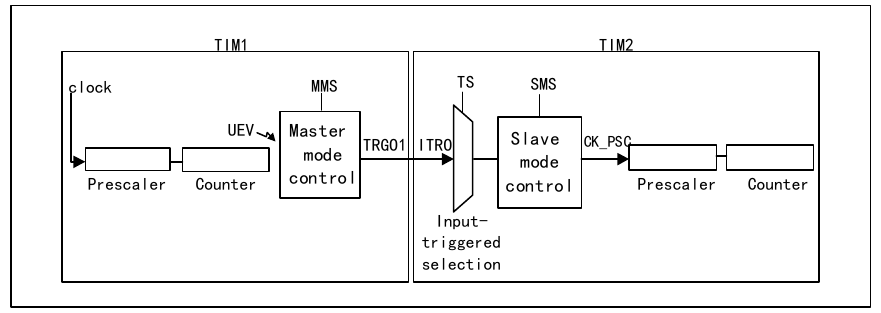
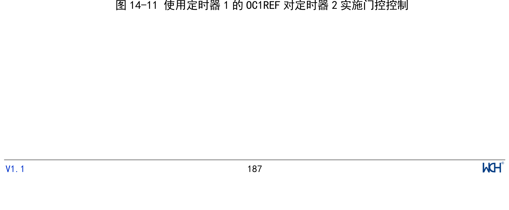
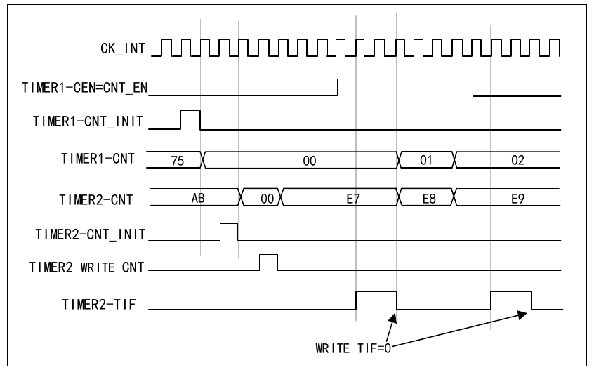
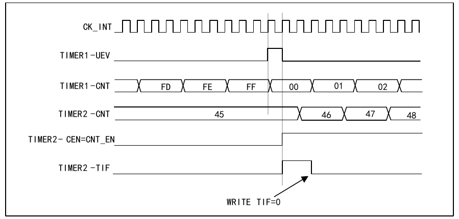
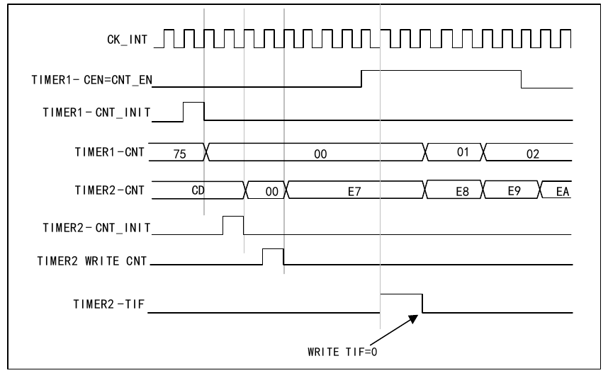
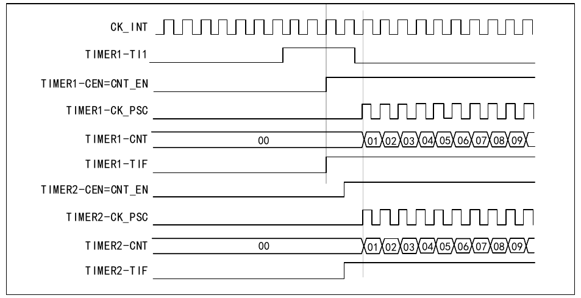

The advanced timer module contains a powerful 16-bit auto-reload timer (TIM1, TIM8) that can be used to measure pulse widths or generate pulses, PWM waves, etc. It is used in motor control, power supply, and other fields.
The main features of the advanced timer (TIM1/8) include:
This section mainly discusses the internal structure of the advanced timer.
As shown in Figure 14-1, the structure of the advanced timer can be roughly divided into three parts: the input clock section, the core counter section, and the capture/compare channel section.
The clock of the advanced timer can come from the PB bus clock (CK_INT), from the external clock input pin (TIMx_ETR), from other timers with clock output capability (ITRx), or from the input pins of the capture/compare channels (TIMx_CHx). These input clock signals become CK_PSC after various configured filtering and prescaling operations, and are output to the core counter section. In addition, these complex clock sources can also be output as TRGO to other timers, ADCs, and other peripherals.
The core of the advanced timer is a 16-bit counter (CNT). CK_PSC is divided by the prescaler (PSC) to become CK_CNT and output to CNT. CNT supports up-counting mode, down-counting mode, and up-down counting mode, and has an auto-reload register (ATRLR) that reloads the initial value for CNT at the end of each counting cycle. There is also an auxiliary counter that counts the number of times ATRLR reloads the initial value for CNT. When the count reaches the value set in the repetition counter register (RPTCR), a specific event can be generated.
The advanced timer has four sets of capture/compare channels. Each capture/compare channel can input pulses from its dedicated pin or output waveforms to a pin, i.e., the capture/compare channel supports both input and output modes. The input of each capture/compare register channel supports filtering, prescaling, and edge detection operations, and supports inter-channel cross-triggering, and can also provide the clock for the core counter CNT. Each capture/compare channel has a set of capture/compare registers (CHxCVR), which support comparison with the main counter (CNT) to output pulses.


The advanced timer CK_PSC has many clock sources, which can be divided into 4 categories:
By selecting the SMS input pulse that determines the CK_PSC source, the actual operations can be divided into 4 categories:
All four clock sources mentioned above can be selected through these four operations.
If the timer is started with the SMS field kept at 000b, the internal clock source (CK_INT) is selected as the clock. In this case, CK_INT is CK_PSC.
If the SMS field is set to 111b, external clock source mode 1 is enabled. When external clock source mode 1 is enabled, TRGI is selected as the source of CK_PSC. Note that the TS field must also be configured to select the source of TRGI. The TS field can select the following pulses as clock sources:
Using external trigger mode 2 allows counting on each rising or falling edge of the external clock pin input. When the ECE bit is set, external clock source mode 2 is used. When using external clock source mode 2, ETRF is selected as CK_PSC. The ETR pin passes through an optional inverter (ETP), a divider (ETPS) to become ETRP, and then through a filter (ETF) to become ETRF.
When the ECE bit is set and SMS is set to 111b, it is equivalent to selecting ETRF as the input via TS.
Setting SMS to 001b, 010b, or 011b will enable encoder mode. Enabling encoder mode allows selecting a specific level of TI1FP1 or TI2FP2 and using the transition edge of the other signal as the signal for output. This mode is used when an external encoder is connected. For specific functionality, refer to Section 14.3.10.
CK_PSC is input to the prescaler (PSC) for division. The PSC is 16-bit, and the actual division factor is equal to the value of R16_TIMx_PSC + 1. CK_PSC becomes CK_CNT after passing through PSC. Changing the value of R16_TIM1_PSC does not take effect immediately; it is updated to PSC after an update event. Update events include clearing the UG bit and reset. The core of the timer is a 16-bit counter (CNT). CK_CNT is finally input to CNT. CNT supports up-counting mode, down-counting mode, and up-down counting mode, and has an auto-reload register (ATRLR) that reloads the initial value for CNT at the end of each counting cycle. There is also an auxiliary counter that records the number of times ATRLR reloads the initial value for CNT. When it reaches the value set in the repetition counter register (RPTCR), a specific event can be generated.
The capture/compare channel is the main component of the timer for implementing complex functions. Its core is the capture/compare register, supplemented by digital filtering of the peripheral input section, prescaling and inter-channel multiplexing, and a comparator and output control in the output section.

The block diagram of the capture/compare channel is shown in Figure 14-3. After the signal is input from channel x pin, it can be selected as TIx (the source of TI1 may not only be CH1; see the timer block diagram in Figure 14-1). TI1 passes through the filter (ICF[3:0]) to generate TI1F, and then through the edge detector to produce TI1F_Rising and TI1F_Falling. These two signals are selected (CC1P) to generate TI1FP1. TI1FP1 and TI2FP1 from channel 2 are sent to CC1S for selection to become IC1, which is then prescaled by ICPS and sent to the capture/compare register.
The capture/compare register consists of a preload register and a shadow register. The read/write process only operates on the preload register. In capture mode, the capture occurs on the shadow register, and then the value is copied to the preload register. In compare mode, the content of the preload register is copied to the shadow register, and then the content of the shadow register is compared with the core counter (CNT).
The implementation of complex functions of the advanced timer is achieved through operations on the timer's capture/compare channels, clock input circuit, and counter and peripheral sections. The timer's clock input can come from multiple clock sources, including the input of capture/compare channels. The operations on the capture/compare channels and clock source selection directly determine its function. The capture/compare channel is bidirectional and can work in both input and output modes.
In up-counting mode, the counter counts from 0 to the auto-reload value (the content of the R16_TIMx_ATRLR register), then restarts counting from 0 and generates a counter overflow event.
If the repetition counter is used, an update event (UEV) is generated when the number of up-counting repetitions reaches the number programmed in the repetition counter register plus one (R16_TIMx_RPTCR + 1). Otherwise, an update event is generated on each counter overflow.
Setting the UG bit in the TIMx_SWEVGR register (by software or using the slave mode controller) also generates an update event.
Setting the UDIS bit in the R16_TIMx_CTLR1 register to 1 by software disables the UEV event. This prevents updating the shadow registers when new values are written to the preload registers. No update events are generated until the UDIS bit is written to 0. However, both the counter and the prescaler counter restart counting from 0 (while the prescaler ratio remains unchanged). In addition, if the URS bit (update request selection) in the R16_TIMx_CTLR1 register is set to 1, setting the UG bit generates an update event UEV but does not set the UIF flag (therefore, no interrupt or DMA request is sent). In this way, if the counter is cleared when a capture event occurs, both an update interrupt and a capture interrupt will not be generated simultaneously.
When an update event occurs, all registers are updated and the update flag (UIF bit in the R16_TIMx_INTFR register) is set to 1 (depending on the URS bit):
In down-counting mode, the counter counts down from the auto-reload value (the content of the R16_TIMx_ATRLR register) to 0, then restarts counting from the auto-reload value and generates a counter underflow event.
If the repetition counter is used, an update event (UEV) is generated when the number of down-counting repetitions reaches the number programmed in the repetition counter register plus one (R16_TIMx_RPTCR + 1). Otherwise, an update event is generated on each counter underflow.
Setting the UG bit in the R16_TIMx_EGR register (by software or using the slave mode controller) also generates an update event.
Setting the UDIS bit in the R16_TIMx_CTLR1 register to 1 by software disables the UEV update event. This prevents updating the shadow registers when new values are written to the preload registers. No update events are generated until the UDIS bit is written to 0. However, the counter restarts counting from the current auto-reload value, while the prescaler counter restarts from 0 (but the prescaler ratio remains unchanged).
In addition, if the URS bit (update request selection) in the R16_TIMx_CTLR1 register is set to 1, setting the UG bit generates an update event UEV but does not set the UIF flag (therefore, no interrupt or DMA request is sent). In this way, if the counter is cleared when a capture event occurs, both an update interrupt and a capture interrupt will not be generated simultaneously.
When an update event occurs, all registers are updated and the update flag (UIF bit in the R16_TIMx_INTFR register) is set to 1 (depending on the URS bit):
In center-aligned mode, the counter counts from 0 to the auto-reload value (content of the R16_TIMx_ATRLR register) - 1, generating a counter overflow event; then counts down from the auto-reload value to 1 and generates a counter underflow event. It then restarts counting from 0.
Center-aligned mode is active when the CMS bits in the R16_TIMx_CTLR1 register are not "00". When the channel is configured in output mode, its output compare interrupt flag is set in the following modes: counter down-counting (center-aligned mode 1, CMS="01"), counter up-counting (center-aligned mode 2, CMS="10"), and counter up/down counting (center-aligned mode 3, CMS="11").
In this mode, the DIR direction bit in the R16_TIMx_CTLR1 register cannot be written; it is updated by hardware and indicates the current counter direction.
An update event is generated on each counter overflow and underflow, or by setting the UG bit in the R16_TIMx_SWEVGR register (by software or using the slave mode controller). In this case, the counter and the prescaler counter restart counting from 0.
Setting the UDIS bit in the R16_TIMx_CTLR1 register to 1 by software disables the UEV update event. This prevents updating the shadow registers when new values are written to the preload registers. No update events are generated until the UDIS bit is written to 0. However, the counter continues to count up and down according to the current auto-reload value.
In addition, if the URS bit (update request selection) in the R16_TIMx_CTLR1 register is set to 1, setting the UG bit generates a UEV update event but does not set the UIF flag (therefore, no interrupt or DMA request is sent). In this way, if the counter is cleared when a capture event occurs, both an update interrupt and a capture interrupt will not be generated simultaneously.
When an update event occurs, all registers are updated and the update flag (UIF bit in the R16_TIMx_INTFR register) is set to 1 (depending on the URS bit):
Input capture mode is one of the basic functions of the timer. The principle of input capture mode is that when a defined edge is detected on the ICxPS signal, a capture event occurs, and the current value of the counter is latched into the capture/compare register (R16_TIMx_CHCTLRx). When a capture event occurs, CCxIF (in R16_TIMx_INTFR) is set, and if interrupt or DMA is enabled, a corresponding interrupt or DMA is generated. If CCxIF is already set when a capture event occurs, the CCxOF bit is set. CCxIF can be cleared by software or by hardware through reading the capture/compare register. CCxOF is cleared by software.
Using channel 1 as an example to illustrate the steps of using input capture mode:
When a captured pulse is input on TI1, the value of the core counter (CNT) is recorded into the capture/compare register, CC1IF is set, and when CC1IF has already been set previously, the CC1OF bit is also set. If the CC1IE bit is set, an interrupt is generated; if the CC1DE bit is set, a DMA request is generated. An input capture event can be generated by software by writing to the event generation register (TIMx_SWEVGR).
Output compare mode is one of the basic functions of the timer. The principle of output compare mode is that when the value of the core counter (CNT) matches the value in the capture/compare register, a specific change or waveform is output. The OCxM field (in R16_TIMx_CHCTLRx) and the CCxP bit (in R16_TIMx_CCER) determine whether the output is a defined high/low level or a level toggle. When a compare match event occurs, the CCxIF bit is also set. If the CCxIE bit has been set beforehand, an interrupt is generated; if the CCxDE bit has been set beforehand, a DMA request is generated.
The steps to configure output compare mode are as follows:
The output mode of the timer's capture/compare channel can be forced by software to output a defined level, without depending on the comparison between the shadow register of the capture/compare register and the core counter.
The specific method is to set OCxM to 100b, which forces OCxREF to low; or set OCxM to 101b, which forces OCxREF to high.
Note that when OCxM is forced to 100b or 101b, the comparison between the internal core counter and the capture/compare register is still ongoing, the corresponding flags are still being set, and interrupts and DMA requests are still being generated.
PWM input mode is used to measure the duty cycle and frequency of a PWM signal, and is a special case of input capture mode. Except for the following differences, the operation is the same as input capture mode: PWM uses two capture/compare channels, and the input polarities of the two channels are set to opposite. One of the signals is set as the trigger input, and SMS is set to reset mode.
For example, to measure the period and frequency of a PWM wave input from TI1, the following operations are needed:
With this configuration, the value in capture/compare register 1 is the PWM period, and the value in capture/compare register 2 is its duty cycle.
PWM output mode is one of the basic functions of the timer. The most common approach in PWM output mode is to use the auto-reload value to determine the PWM frequency and the capture/compare register to determine the duty cycle. Set OCxM to 110b or 111b to use PWM mode 1 or mode 2, set the OCxPE bit to enable the preload register, and finally set the ARPE bit to enable auto-reload of the preload register. Since the value of the preload register is transferred to the shadow register only when an update event occurs, the UG bit needs to be set to initialize all registers before the core counter starts counting. In PWM mode, the core counter and the capture/compare register are continuously compared, and based on the CMS bits, the timer can output edge-aligned or center-aligned PWM signals.
When using edge-aligned mode, the core counter counts up or down. In PWM mode 1, when the value of the core counter is greater than the capture/compare register, OCxREF is high; when the value of the core counter is less than the capture/compare register (e.g., when the core counter reaches the value of R16_TIMx_ATRLR and resets to all 0), OCxREF is low.
When using center-aligned mode, the core counter operates in an alternating up-counting and down-counting mode. OCxREF transitions on rising and falling edges when the value of the core counter matches the capture/compare register. However, the timing of when the compare flag is set differs among the three center-aligned modes. When using center-aligned mode, it is best to generate a software update flag (set the UG bit) before starting the core counter.
Each capture/compare channel generally has two output pins (capture/compare channel 4 has only one output pin), which can output two complementary signals (OCx and OCxN). OCx and OCxN can have their polarity set independently through the CCxP and CCxNP bits, their output enable set independently through CCxE and CCxNE, and dead-time and other controls through the MOE, OIS, OISN, OSSI, and OSSR bits. Enabling both OCx and OCxN outputs simultaneously will insert dead-time. Each channel has a 10-bit dead-time generator. If a break circuit is present, the MOE bit must also be set. OCx and OCxN are generated in association with OCxREF. If both OCx and OCxN are active high, then OCx is the same as OCxREF, except that the rising edge of OCx has a delay relative to OCxREF. OCxN is the inverse of OCxREF, and its rising edge has a delay relative to the falling edge of the reference signal. If the delay is greater than the effective output width, the corresponding pulse is not generated.
Figure 14-4 shows the relationship between OCx, OCxN, and OCxREF, and illustrates the dead-time.
When a break signal is generated, the output enable signal and inactive level are modified according to the MOE, OIS, OISN, OSSI, and OSSR bits. However, OCx and OCxN do not always stay at the active level. The break event source can come from the break input pin or from a clock failure event, which is generated by the CSS (Clock Security System).
After system reset, the break function is disabled by default (MOE bit is low). Setting the BKE bit enables the break function. The polarity of the input break signal can be set by configuring BKP. The BKE and BKP signals can be written simultaneously, but there is a PB clock delay before the actual write takes effect, so one PB cycle must be waited before the written value can be correctly read back.
When the selected level appears on the break pin, the system performs the following actions:
Single pulse mode can be used to have the microcontroller respond to a specific event and generate a pulse after a delay. Both the delay and pulse width are programmable. Setting the OPM bit causes the core counter to stop when the next update event UEV is generated (counter rolls over to 0).
As shown in Figure 14-5, starting from detecting a rising edge on the TI2 input pin, after a delay Tdelay, a positive pulse of length Tpulse is generated on OC1:

Encoder mode is a typical application of the timer. It can be used to interface with the dual-phase output of an encoder. The counting direction of the core counter is synchronized with the rotation direction of the encoder shaft. Each pulse output by the encoder causes the core counter to increment or decrement by one. The steps to use the encoder are: set the SMS field to 001b (count on TI2 edges only), 010b (count on TI1 edges only), or 011b (count on both TI1 and TI2 edges), connect the encoder to the inputs of capture/compare channels 1 and 2, and set a value in the auto-reload register. This value can be set relatively large. In encoder mode, the timer's internal capture/compare registers, prescaler, repetition counter register, etc. all work normally. The following table shows the relationship between the counting direction and the encoder signals.
| Active counting edge | Level of the opposite signal | TI1FP1 signal edge | TI2FP2 signal edge | ||
|---|---|---|---|---|---|
| Rising | Falling | Rising | Falling | ||
| Count on TI1 edges only | High | Down-count | Up-count | No count | |
| Low | Up-count | Down-count | |||
| Count on TI2 edges only | High | No count | Up-count | Down-count | |
| Low | Down-count | Up-count | |||
| Count on both TI1 and TI2 edges | High | Down-count | Up-count | Up-count | Down-count |
| Low | Up-count | Down-count | Down-count | Up-count | |
TIMx timers are internally connected together to achieve timer synchronization or cascading. When a timer is configured as master mode, it can perform reset, start, stop operations on the counter of another timer configured as slave mode, or provide its clock.

For example, timer 1 can be configured as a prescaler for timer 2. To do this:
In this example, timer 2 is enabled by the output compare 1 of timer 1. Timer 2 counts according to the divided internal clock only when OC1REF of timer 1 is high. The clock frequency of both counters is based on CK_INT divided by 3 through the prescaler (fCK_CNT = fCK_INT/3).

The counter and prescaler of timer 2 are not initialized before starting. Therefore, they start counting from their respective current values. Before starting timer 1, both timers can be reset to start counting from specified values. This allows any desired value to be written into the timer counters. Both timers can be easily reset by software using the UG bit in the R16_TIMx_SWEVGR register.
In the next example, timer 1 is synchronized with timer 2. Timer 1 is in master mode, counting from 0. Timer 2 is in slave mode, counting from 0xE7. Both timers have the same prescaler ratio. When timer 1 is disabled by writing "0" to the CEN bit in the R16_TIM1_CTLR1 register, timer 2 will stop:

In this example, the update event of timer 1 is used to enable timer 2. Whenever timer 1 generates an update event, timer 2 starts counting from its current value (which may not be 0) according to the divided internal clock. When timer 2 receives the trigger signal, its CEN bit is automatically set to 1, and the counter starts counting until "0" is written to the CEN bit of the R16_TIM2_CTLR1 register. The clock frequency of both counters is based on CK_INT divided by 3 through the prescaler (fCK_CNT = fCK_INT/3).

As shown in the above example, the user can initialize both counters before starting to count. Figure 14-14 shows the counting behavior with the same configuration as Figure 14-13, except in trigger mode (SMS=110 in the R16_TIM2_SMCFGR register) instead of gated mode.

For example, timer 1 can be configured as a prescaler for timer 2. To do this:
In this example, when a rising edge appears on the TI1 input of timer 1, timer 1 is enabled, and simultaneously timer 2 is enabled. To ensure alignment of both counters, timer 1 must be configured as master/slave mode (corresponding TI1 as slave, and corresponding to timer 2 as master):
When a rising edge appears on TI1 (timer 1), both counters start counting synchronously according to the internal clock, and both TIF flags are set to 1.

The timer can output clock pulses (TRGO) and can also receive inputs from other timers (ITRx). The sources of ITRx (the TRGO of other timers) are different for different timers. The timer internal trigger connections are shown in Table 14-2.
| Slave timer | ITR0 (TS=000) | ITR1 (TS=001) | ITR2 (TS=010) | ITR3 (TS=011) |
|---|---|---|---|---|
| TIM1 | - | TIM2 | TIM3 | TIM4 |
When the system enters debug mode, the timer continues running or stops according to the DBG module settings.
Pulse measurement can be performed through the TIMx_AUX register.
For example: to capture pulse width through channel 2, in the capture function configuration, select the source of the IC2 signal (CC2S bits of the TIMx_CHCTLR1 register set to 11b), and enable the dual-edge capture function of channel 2 (CAP_ED_CH2 bit of the TIMx_AUX register set to 1). The dual-edge capture is now configured.
The captured dual-edge pulse width value can be read through the CCR2 bits of the TIMx_CH2CVR register.
| Name | Address | Description | Reset Value |
|---|---|---|---|
| R16_TIM1_CTLR1 | 0x40012C00 | Control register 1 | 0x0000 |
| R16_TIM1_CTLR2 | 0x40012C04 | Control register 2 | 0x0000 |
| R16_TIM1_SMCFGR | 0x40012C08 | Slave mode control register | 0x0000 |
| R16_TIM1_DMAINTENR | 0x40012C0C | DMA/interrupt enable register | 0x0000 |
| R16_TIM1_INTFR | 0x40012C10 | Interrupt status register | 0x0000 |
| R16_TIM1_SWEVGR | 0x40012C14 | Event generation register | 0x0000 |
| R16_TIM1_CHCTLR1 | 0x40012C18 | Capture/compare control register 1 | 0x0000 |
| R16_TIM1_CHCTLR2 | 0x40012C1C | Capture/compare control register 2 | 0x0000 |
| R16_TIM1_CCER | 0x40012C20 | Capture/compare enable register | 0x0000 |
| R16_TIM1_CNT | 0x40012C24 | Counter | 0x0000 |
| R16_TIM1_PSC | 0x40012C28 | Counter clock prescaler | 0x0000 |
| R16_TIM1_ATRLR | 0x40012C2C | Auto-reload register | 0xFFFF |
| R16_TIM1_RPTCR | 0x40012C30 | Repetition counter register | 0x0000 |
| R16_TIM1_CH1CVR | 0x40012C34 | Capture/compare register 1 | 0x0000 |
| R16_TIM1_CH2CVR | 0x40012C38 | Capture/compare register 2 | 0x0000 |
| R16_TIM1_CH3CVR | 0x40012C3C | Capture/compare register 3 | 0x0000 |
| R16_TIM1_CH4CVR | 0x40012C40 | Capture/compare register 4 | 0x0000 |
| R16_TIM1_BDTR | 0x40012C44 | Break and dead-time register | 0x0000 |
| R16_TIM1_DMACFGR | 0x40012C48 | DMA control register | 0x0000 |
| R16_TIM1_DMAADR | 0x40012C4C | DMA address for continuous mode register | 0x0000 |
| R16_TIM1_AUX | 0x40012C50 | Dual-edge capture register | 0x0000 |
| Name | Address | Description | Reset Value |
|---|---|---|---|
| R16_TIM8_CTLR1 | 0x40013400 | Control register 1 | 0x0000 |
| R16_TIM8_CTLR2 | 0x40013404 | Control register 2 | 0x0000 |
| R16_TIM8_SMCFGR | 0x40013408 | Slave mode control register | 0x0000 |
| R16_TIM8_DMAINTENR | 0x4001340C | DMA/interrupt enable register | 0x0000 |
| R16_TIM8_INTFR | 0x40013410 | Interrupt status register | 0x0000 |
| R16_TIM8_SWEVGR | 0x40013414 | Event generation register | 0x0000 |
| R16_TIM8_CHCTLR1 | 0x40013418 | Capture/compare control register 1 | 0x0000 |
| R16_TIM8_CHCTLR2 | 0x4001341C | Capture/compare control register 2 | 0x0000 |
| R16_TIM8_CCER | 0x40013420 | Capture/compare enable register | 0x0000 |
| R16_TIM8_CNT | 0x40013424 | Counter | 0x0000 |
| R16_TIM8_PSC | 0x40013428 | Counter clock prescaler | 0x0000 |
| R16_TIM8_ATRLR | 0x4001342C | Auto-reload register | 0xFFFF |
| R16_TIM8_RPTCR | 0x40013430 | Repetition counter register | 0x0000 |
| R16_TIM8_CH1CVR | 0x40013434 | Capture/compare register 1 | 0x0000 |
| R16_TIM8_CH2CVR | 0x40013438 | Capture/compare register 2 | 0x0000 |
| R16_TIM8_CH3CVR | 0x4001343C | Capture/compare register 3 | 0x0000 |
| R16_TIM8_CH4CVR | 0x40013440 | Capture/compare register 4 | 0x0000 |
| R16_TIM8_BDTR | 0x40013444 | Break and dead-time register | 0x0000 |
| R16_TIM8_DMACFGR | 0x40013448 | DMA control register | 0x0000 |
| R16_TIM8_DMAADR | 0x4001344C | DMA address for continuous mode register | 0x0000 |
| R16_TIM8_AUX | 0x40013450 | Dual-edge capture register | 0x0000 |
Offset address: 0x00
| 15 | 14 | 13 | 12 | 11 | 10 | 9 | 8 | 7 | 6 | 5 | 4 | 3 | 2 | 1 | 0 |
|---|---|---|---|---|---|---|---|---|---|---|---|---|---|---|---|
| Reserved | CKD[1:0] | ARPE | CMS[1:0] | DIR | OPM | URS | UDIS | CEN | |||||||
| Bits | Name | Access | Description | Reset |
|---|---|---|---|---|
| [15:10] | Reserved | RO | Reserved. | 0 |
| [9:8] | CKD[1:0] | RW | These 2 bits define the division ratio between the timer clock (CK_INT) frequency, the dead-time, and the sampling clock used by the dead-time generator and digital filter (ETR, TIx): 00: Tdts = Tck_int; 01: Tdts = 2 × Tck_int; 10: Tdts = 4 × Tck_int; 11: Reserved. |
00b |
| 7 | ARPE | RW | Auto-reload preload enable: 1: Auto-reload register (ATRLR) is enabled; 0: Auto-reload register (ATRLR) is disabled. |
0 |
| [6:5] | CMS[1:0] | RW | Center-aligned mode selection: 00: Edge-aligned mode. The counter counts up or down according to the direction bit (DIR). 01: Center-aligned mode 1. The counter counts up and down alternately. The output compare interrupt flags of channels configured as output (CCxS=00 in CHCTLRx register) are set only when the counter is counting down. 10: Center-aligned mode 2. The counter counts up and down alternately. The output compare interrupt flags of channels configured as output (CCxS=00 in CHCTLRx register) are set only when the counter is counting up. 11: Center-aligned mode 3. The counter counts up and down alternately. The output compare interrupt flags of channels configured as output (CCxS=00 in CHCTLRx register) are set both when the counter is counting up and down. Note: It is not allowed to switch from edge-aligned mode to center-aligned mode while the counter is enabled (CEN=1). |
00b |
| 4 | DIR | RW | Counter direction: 1: The counter counts down; 0: The counter counts up. Note: This bit is invalid when the counter is configured in center-aligned mode or encoder mode. |
0 |
| 3 | OPM | RW | One-pulse mode: 1: The counter stops on the next update event (CEN bit is cleared); 0: The counter does not stop on the next update event. |
0 |
| 2 | URS | RW | Update request source. Software selects the source of UEV events through this bit. 1: If update interrupt or DMA request is enabled, only counter overflow/underflow generates update interrupt or DMA request; 0: If update interrupt or DMA request is enabled, any of the following events generates update interrupt or DMA request: - Counter overflow/underflow; - Setting the UG bit; - Update generated by the slave mode controller. |
0 |
| 1 | UDIS | RW | Update disable. Software enables/disables UEV events through this bit. 1: UEV disabled. No update events are generated, and registers (ARR, PSC, CCRx) keep their values. If the UG bit is set or a hardware reset is issued by the slave mode controller, the counter and prescaler are reinitialized; 0: UEV enabled. Update (UEV) events are generated by any of the following events: - Counter overflow/underflow; - Setting the UG bit; - Update from the slave mode controller. Buffered registers are loaded with their preload values. |
0 |
| 0 | CEN | RW | Counter enable: 1: Counter enabled; 0: Counter disabled. Note: After the software sets the CEN bit, external clock, gated mode, and encoder mode can work. Trigger mode can automatically set the CEN bit through hardware. |
0 |
Offset address: 0x04
| 15 | 14 | 13 | 12 | 11 | 10 | 9 | 8 | 7 | 6 | 5 | 4 | 3 | 2 | 1 | 0 |
|---|---|---|---|---|---|---|---|---|---|---|---|---|---|---|---|
| Reserved | OIS4 | OIS3N | OIS3 | OIS2N | OIS2 | OIS1N | OIS1 | TI1S | MMS[2:0] | CCDS | CCUS | Reserved | CCPC | ||
| Bits | Name | Access | Description | Reset |
|---|---|---|---|---|
| 15 | Reserved | RO | Reserved. | 0 |
| 14 | OIS4 | RW | Output idle state 4: 1: When MOE=0, if OC4N is implemented, OC4=1 after dead-time; 0: When MOE=0, if OC4N is implemented, OC4=0 after dead-time. Note: This bit cannot be modified after LOCK level 1, 2, or 3 has been set (TIMx_BDTR register). |
0 |
| 13 | OIS3N | RW | Output idle state 3: 1: When MOE=0, OC3N=1 after dead-time; 0: When MOE=0, OC3N=0 after dead-time. Note: This bit cannot be modified after LOCK level 1, 2, or 3 has been set (TIMx_BDTR register). |
0 |
| 12 | OIS3 | RW | Output idle state 3, see OIS4. | 0 |
| 11 | OIS2N | RW | Output idle state 2, see OIS3N. | 0 |
| 10 | OIS2 | RW | Output idle state 2, see OIS4. | 0 |
| 9 | OIS1N | RW | Output idle state 1, see OIS3N. | 0 |
| 8 | OIS1 | RW | Output idle state 1, see OIS4. | 0 |
| 7 | TI1S | RW | TI1 selection: 1: TIMx_CH1, TIMx_CH2, and TIMx_CH3 pins are XOR'ed and connected to TI1 input; 0: TIMx_CH1 pin is directly connected to TI1 input. |
0 |
| [6:4] | MMS[2:0] | RW | Master mode selection. These 3 bits select the synchronization information (TRGO) sent to the slave timer in master mode. The possible combinations are: 000: Reset – The UG bit of the TIMx_EGR register is used as trigger output (TRGO). If the reset is generated by the trigger input (slave mode controller in reset mode), the signal on TRGO is delayed relative to the actual reset; 001: Enable – The counter enable signal CNT_EN is used as trigger output (TRGO). This is useful when starting multiple timers simultaneously or controlling the enable of a slave timer for a certain period. The counter enable signal is generated by the logical OR of the CEN control bit and the trigger input signal in gated mode. When the counter enable signal is controlled by the trigger input, there is a delay on TRGO, unless master/slave mode is selected (see the description of the MSM bit in the TIMx_SMCR register); 010: Update – The update event is selected as trigger input (TRGO). For example, the clock of a master timer can be used as a prescaler for a slave timer; 011: Compare pulse – The trigger output sends a positive pulse (TRGO) when a capture or a compare match occurs and the CC1IF flag is to be set (even if it is already high); 100: Compare – OC1REF signal is used as trigger output (TRGO); 101: Compare – OC2REF signal is used as trigger output (TRGO); 110: Compare – OC3REF signal is used as trigger output (TRGO); 111: Compare – OC4REF signal is used as trigger output (TRGO). |
000b |
| 3 | CCDS | RW | Capture/compare DMA selection. 1: DMA request of CHxCVR is sent when an update event occurs; 0: DMA request of CHxCVR is generated when a CHxCVR event occurs. |
0 |
| 2 | CCUS | RW | Capture/compare control update selection. 1: If CCPC is set, they can be updated by setting the COM bit or by a rising edge on TRGI; 0: If CCPC is set, they can only be updated by setting the COM bit. Note: This bit only applies to channels with complementary outputs. |
0 |
| 1 | Reserved | RO | Reserved. | 0 |
| 0 | CCPC | RW | Capture/compare preload control bit. 1: CCxE, CCxNE, and OCxM bits are preloaded; after setting this bit, they are updated only after the COM bit is set; 0: CCxE, CCxNE, and OCxM bits are not preloaded. Note: This bit only applies to channels with complementary outputs. |
0 |
Offset address: 0x08
| 15 | 14 | 13 | 12 | 11 | 10 | 9 | 8 | 7 | 6 | 5 | 4 | 3 | 2 | 1 | 0 |
|---|---|---|---|---|---|---|---|---|---|---|---|---|---|---|---|
| ETP | ECE | ETPS[1:0] | ETF[3:0] | MSM | TS[2:0] | Reserved | SMS[2:0] | ||||||||
| Bits | Name | Access | Description | Reset |
|---|---|---|---|---|
| 15 | ETP | RO | ETR trigger polarity selection. This bit selects whether the ETR is input directly or the inverted ETR is input. 1: ETR is inverted, active low level or falling edge; 0: ETR, active high level or rising edge. |
0 |
| 14 | ECE | RW | External clock mode 2 enable selection: 1: External clock mode 2 enabled; 0: External clock mode 2 disabled. Note 1: The slave mode can be used simultaneously with external clock mode 2: reset mode, gated mode, and trigger mode; however, in this case TRGI cannot be connected to ETRF (TS bits cannot be '111'). Note 2: When both external clock mode 1 and external clock mode 2 are enabled simultaneously, the external clock input is ETRF. |
0 |
| [13:12] | ETPS[1:0] | RW | External trigger signal (ETRP) prescaler. The maximum frequency of this signal cannot exceed 1/4 of the TIMxCLK frequency. This field can be used to reduce the frequency: 00: Prescaler disabled; 01: ETRP frequency divided by 2; 10: ETRP frequency divided by 4; 11: ETRP frequency divided by 8. |
00b |
| [11:8] | ETF[3:0] | RW | External trigger filter. In practice, the digital filter is an event counter that uses a certain sampling frequency and produces an output transition after recording N events. 0000: No filter, sampling at Fdts; 0001: Sampling frequency Fsampling=Fck_int, N=2; 0010: Sampling frequency Fsampling=Fck_int, N=4; 0011: Sampling frequency Fsampling=Fck_int, N=8; 0100: Sampling frequency Fsampling=Fdts/2, N=6; 0101: Sampling frequency Fsampling=Fdts/2, N=8; 0110: Sampling frequency Fsampling=Fdts/4, N=6; 0111: Sampling frequency Fsampling=Fdts/4, N=8; 1000: Sampling frequency Fsampling=Fdts/8, N=6; 1001: Sampling frequency Fsampling=Fdts/8, N=8; 1010: Sampling frequency Fsampling=Fdts/16, N=5; 1011: Sampling frequency Fsampling=Fdts/16, N=6; 1100: Sampling frequency Fsampling=Fdts/16, N=8; 1101: Sampling frequency Fsampling=Fdts/32, N=5; 1110: Sampling frequency Fsampling=Fdts/32, N=6; 1111: Sampling frequency Fsampling=Fdts/32, N=8. |
0000b |
| 7 | MSM | RW | Master/slave mode selection: 1: Events on the trigger input (TRGI) are delayed to allow perfect synchronization between the current timer (via TRGO) and its slave timer. This is very useful when several timers need to be synchronized to a single external event; 0: No effect. |
0 |
| [6:4] | TS[2:0] | RW | Trigger selection field. These 3 bits select the trigger input source used for synchronizing the counter: 000: Internal trigger 0 (ITR0); 001: Internal trigger 1 (ITR1); 010: Internal trigger 2 (ITR2); 011: Internal trigger 3 (ITR3); 100: TI1 edge detector (TI1F_ED); 101: Filtered timer input 1 (TI1FP1); 110: Filtered timer input 2 (TI2FP2); 111: External trigger input (ETRF); The above can only be changed when SMS is 0. Note: See Table 14-2 for details. |
000b |
| 3 | Reserved | RO | Reserved. | 0 |
| [2:0] | SMS[2:0] | RW | Input mode selection field. Selects the clock and trigger mode of the core counter. 000: Driven by internal clock CK_INT; 001: Encoder mode 1, the core counter counts up/down on TI2FP2 edges depending on the level of TI1FP1; 010: Encoder mode 2, the core counter counts up/down on TI1FP1 edges depending on the level of TI2FP2; 011: Encoder mode 3, the core counter counts up/down on both TI1FP1 and TI2FP2 edges depending on the level of the other input signal; 100: Reset mode, the rising edge of the trigger input (TRGI) initializes the counter and generates a signal to update the registers; 101: Gated mode, the counter clock is enabled when the trigger input (TRGI) is high; when the trigger input goes low, the counter stops. Both the start and stop of the counter are controlled; 110: Trigger mode, the counter starts on the rising edge of the trigger input TRGI. Only the start of the counter is controlled; 111: External clock mode 1, the rising edge of the selected trigger input (TRGI) drives the counter. |
000b |
Offset address: 0x0C
| 15 | 14 | 13 | 12 | 11 | 10 | 9 | 8 | 7 | 6 | 5 | 4 | 3 | 2 | 1 | 0 |
|---|---|---|---|---|---|---|---|---|---|---|---|---|---|---|---|
| Reserved | TDE | COMDE | CC4DE | CC3DE | CC2DE | CC1DE | UDE | BIE | TIE | COMIE | CC4IE | CC3IE | CC2IE | CC1IE | UIE |
| Bits | Name | Access | Description | Reset |
|---|---|---|---|---|
| 15 | Reserved | RO | Reserved. | 0 |
| 14 | TDE | RW | Trigger DMA request enable bit. 1: Trigger DMA request enabled; 0: Trigger DMA request disabled. |
0 |
| 13 | COMDE | RW | COM DMA request enable bit. 1: COM DMA request enabled; 0: COM DMA request disabled. |
0 |
| 12 | CC4DE | RW | Capture/compare channel 4 DMA request enable bit. 1: Capture/compare channel 4 DMA request enabled; 0: Capture/compare channel 4 DMA request disabled. |
0 |
| 11 | CC3DE | RW | Capture/compare channel 3 DMA request enable bit. 1: Capture/compare channel 3 DMA request enabled; 0: Capture/compare channel 3 DMA request disabled. |
0 |
| 10 | CC2DE | RW | Capture/compare channel 2 DMA request enable bit. 1: Capture/compare channel 2 DMA request enabled; 0: Capture/compare channel 2 DMA request disabled. |
0 |
| 9 | CC1DE | RW | Capture/compare channel 1 DMA request enable bit. 1: Capture/compare channel 1 DMA request enabled; 0: Capture/compare channel 1 DMA request disabled. |
0 |
| 8 | UDE | RW | Update DMA request enable bit. 1: Update DMA request enabled; 0: Update DMA request disabled. |
0 |
| 7 | BIE | RW | Break interrupt enable bit. 1: Break interrupt enabled; 0: Break interrupt disabled. |
0 |
| 6 | TIE | RW | Trigger interrupt enable bit. 1: Trigger interrupt enabled; 0: Trigger interrupt disabled. |
0 |
| 5 | COMIE | RW | COM interrupt enable bit. 1: COM interrupt enabled; 0: COM interrupt disabled. |
0 |
| 4 | CC4IE | RW | Capture/compare channel 4 interrupt enable bit. 1: Capture/compare channel 4 interrupt enabled; 0: Capture/compare channel 4 interrupt disabled. |
0 |
| 3 | CC3IE | RW | Capture/compare channel 3 interrupt enable bit. 1: Capture/compare channel 3 interrupt enabled; 0: Capture/compare channel 3 interrupt disabled. |
0 |
| 2 | CC2IE | RW | Capture/compare channel 2 interrupt enable bit. 1: Capture/compare channel 2 interrupt enabled; 0: Capture/compare channel 2 interrupt disabled. |
0 |
| 1 | CC1IE | RW | Capture/compare channel 1 interrupt enable bit. 1: Capture/compare channel 1 interrupt enabled; 0: Capture/compare channel 1 interrupt disabled. |
0 |
| 0 | UIE | RW | Update interrupt enable bit. 1: Update interrupt enabled; 0: Update interrupt disabled. |
0 |
Offset address: 0x10
| 15 | 14 | 13 | 12 | 11 | 10 | 9 | 8 | 7 | 6 | 5 | 4 | 3 | 2 | 1 | 0 |
|---|---|---|---|---|---|---|---|---|---|---|---|---|---|---|---|
| Reserved | CC4OF | CC3OF | CC2OF | CC1OF | Reserved | BIF | TIF | COMIF | CC4IF | CC3IF | CC2IF | CC1IF | UIF | ||
| Bits | Name | Access | Description | Reset |
|---|---|---|---|---|
| [15:13] | Reserved | RO | Reserved. | 0 |
| 12 | CC4OF | RW0 | Capture/compare channel 4 over-capture flag. | 0 |
| 11 | CC3OF | RW0 | Capture/compare channel 3 over-capture flag. | 0 |
| 10 | CC2OF | RW0 | Capture/compare channel 2 over-capture flag. | 0 |
| 9 | CC1OF | RW0 | Capture/compare channel 1 over-capture flag, only used when the capture/compare channel is configured in input capture mode. This flag is set by hardware and can be cleared by software writing 0. 1: The counter value was captured to the capture/compare register while CC1IF was already set; 0: No over-capture occurred. |
0 |
| 8 | Reserved | RO | Reserved. | 0 |
| 7 | BIF | RW0 | Break interrupt flag. Set by hardware when the break input becomes active; can be cleared by software. 1: Break input active level detected on the break pin; 0: No break event generated. |
0 |
| 6 | TIF | RW0 | Trigger interrupt flag. Set by hardware when a trigger event occurs; can be cleared by software. Trigger events include detecting a valid edge on the TRGI input in modes other than gated mode, or any edge in gated mode. 1: Trigger event generated; 0: No trigger event generated. |
0 |
| 5 | COMIF | RW0 | COM interrupt flag. Set by hardware when a COM event is generated; can be cleared by software. A COM event includes the update of CCxE, CCxNE, and OCxM. 1: COM event generated; 0: No COM event generated. |
0 |
| 4 | CC4IF | RW0 | Capture/compare channel 4 interrupt flag. | 0 |
| 3 | CC3IF | RW0 | Capture/compare channel 3 interrupt flag. | 0 |
| 2 | CC2IF | RW0 | Capture/compare channel 2 interrupt flag. | 0 |
| 1 | CC1IF | RW0 | Capture/compare channel 1 interrupt flag. If the capture/compare channel is configured in output mode: This bit is set by hardware when the counter value matches the compare value, except in center-aligned mode. This bit is cleared by software. 1: The core counter value matches capture/compare register 1; 0: No match occurred. If capture/compare channel 1 is configured in input mode: This bit is set by hardware when a capture event occurs; it is cleared by software or by reading the capture/compare register. 1: The counter value has been captured to capture/compare register 1; 0: No input capture occurred. |
0 |
| 0 | UIF | RW0 | Update interrupt flag. Set by hardware when an update event is generated; cleared by software. 1: Update interrupt generated; 0: No update event generated. Update events are generated in the following situations: If UDIS=0, when the repetition counter overflows or underflows; If URS=0 and UDIS=0, when the UG bit is set, or when the core counter is reinitialized by software; If URS=0 and UDIS=0, when the counter CNT is reinitialized by a trigger event. |
0 |
Offset address: 0x14
| 15 | 14 | 13 | 12 | 11 | 10 | 9 | 8 | 7 | 6 | 5 | 4 | 3 | 2 | 1 | 0 |
|---|---|---|---|---|---|---|---|---|---|---|---|---|---|---|---|
| Reserved | BG | TG | COMG | CC4G | CC3G | CC2G | CC1G | UG | |||||||
| Bits | Name | Access | Description | Reset |
|---|---|---|---|---|
| [15:8] | Reserved | RO | Reserved. | 0 |
| 7 | BG | WO | Break event generation bit. This bit is set and cleared by software to generate a break event. 1: A break event is generated. MOE=0, BIF=1. If the corresponding interrupt and DMA are enabled, the corresponding interrupt and DMA are generated; 0: No action. |
0 |
| 6 | TG | WO | Trigger event generation bit. This bit is set by software and cleared by hardware to generate a trigger event. 1: A trigger event is generated. TIF is set. If the corresponding interrupt and DMA are enabled, the corresponding interrupt and DMA are generated; 0: No action. |
0 |
| 5 | COMG | WO | Capture/compare control update generation bit. Generates a capture/compare control update event. This bit is set by software and automatically cleared by hardware. 1: When CCPC=1, allows updating CCxE, CCxNE, and OCxM bits; 0: No action. Note: This bit is only valid for channels with complementary outputs (channels 1, 2, 3). |
0 |
| 4 | CC4G | WO | Capture/compare event generation bit 4. Generates capture/compare event 4. | 0 |
| 3 | CC3G | WO | Capture/compare event generation bit 3. Generates capture/compare event 3. | 0 |
| 2 | CC2G | WO | Capture/compare event generation bit 2. Generates capture/compare event 2. | 0 |
| 1 | CC1G | WO | Capture/compare event generation bit 1. Generates capture/compare event 1. This bit is set by software and cleared by hardware. Used to generate a capture/compare event. 1: A capture/compare event is generated on capture/compare channel 1: If capture/compare channel 1 is configured as output: Sets the CC1IF bit. If the corresponding interrupt and DMA are enabled, the corresponding interrupt and DMA are generated; If capture/compare channel 1 is configured as input: The current core counter value is captured to capture/compare register 1. Sets the CC1IF bit; if the corresponding interrupt and DMA are enabled, the corresponding interrupt and DMA are generated. If CC1IF is already set, the CC1OF bit is set; 0: No action. |
0 |
| 0 | UG | WO | Update event generation bit. Generates an update event. This bit is set by software and automatically cleared by hardware. 1: Initializes the counter and generates an update event; 0: No action. Note: The prescaler counter is also cleared, but the prescaler ratio remains unchanged. In center-aligned mode or up-counting mode, the core counter is cleared; in down-counting mode, the core counter takes the value of the auto-reload register. |
0 |
Offset address: 0x18
The channel can be used for input (capture mode) or output (compare mode). The direction of the channel is defined by the corresponding CCxS bits. The function of the other bits in this register differs between input and output modes. OCxx describes the function of the channel in output mode, and ICxx describes the function of the channel in input mode.
| 15 | 14 | 13 | 12 | 11 | 10 | 9 | 8 | 7 | 6 | 5 | 4 | 3 | 2 | 1 | 0 |
|---|---|---|---|---|---|---|---|---|---|---|---|---|---|---|---|
| OC2CE | OC2M[2:0] | OC2PE | OC2FE | CC2S[1:0] | OC1CE | OC1M[2:0] | OC1PE | OC1FE | CC1S[1:0] | ||||||
| IC2F[3:0] | IC2PSC[1:0] | IC1F[3:0] | IC1PSC[1:0] | ||||||||||||
| Bits | Name | Access | Description | Reset |
|---|---|---|---|---|
| 15 | OC2CE | RW | Capture/compare channel 2 clear enable bit. 1: OC2REF is cleared to 0 as soon as a high level is detected on the ETRF input; 0: OC2REF is not affected by the ETRF input. |
0 |
| [14:12] | OC2M[2:0] | RW | Capture/compare channel 2 mode setting field. These 3 bits define the action of the output reference signal OC2REF, which determines the values of OC2 and OC2N. OC2REF is active high, while the active level of OC2 and OC2N depends on the CC2P and CC2NP bits. 000: Frozen. The comparison between the capture/compare register value and the core counter has no effect on OC2REF; 001: Force active level. When the core counter matches the value of capture/compare register 2, OC2REF is forced high; 010: Force inactive level. When the core counter value matches capture/compare register 2, OC2REF is forced low; 011: Toggle. When the core counter matches the value of capture/compare register 2, OC2REF toggles; 100: Force inactive level. OC2REF is forced low; 101: Force active level. OC2REF is forced high; 110: PWM mode 1. In up-counting, channel 2 is active as long as the core counter is less than the capture/compare register value, otherwise inactive. In down-counting, channel 2 is inactive (OC2REF=0) as long as the core counter is greater than the capture/compare register value, otherwise active (OC2REF=1); 111: PWM mode 2. In up-counting, channel 2 is inactive as long as the core counter is less than the capture/compare register value, otherwise active. In down-counting, channel 2 is active (OC2REF=1) as long as the core counter is greater than the capture/compare register value, otherwise inactive (OC2REF=0). Note: Once LOCK level is set to 3 and CC1S=00b, this bit cannot be modified. In PWM mode 1 or PWM mode 2, OC2REF level changes only when the comparison result changes or when switching from freeze mode to PWM mode in output compare mode. |
000b |
| 11 | OC2PE | RW | Capture/compare register 2 preload enable bit. 1: Preload function of capture/compare register enabled. Read/write operations only operate on the preload register. The preload value of capture/compare register 1 is loaded into the current shadow register on an update event; 0: Preload function of capture/compare register 2 disabled. Capture/compare register 2 can be written at any time, and the newly written value takes effect immediately. Note: Once LOCK level is set to 3 and CC1S=00, this bit cannot be modified. In single-pulse mode (OPM=1), PWM mode can be used without confirming the preload register, otherwise its behavior is undefined. |
0 |
| 10 | OC2FE | RW | Capture/compare channel 2 fast enable bit. This bit is used to accelerate the response of the capture/compare channel output to trigger input events. 1: The effect of the active edge on the trigger is like a compare match has occurred. Therefore, OC is set to the compare level regardless of the comparison result. The delay between the active edge of the trigger and the capture/compare channel 2 output is reduced to 3 clock cycles; 0: The capture/compare channel 2 operates normally according to the counter and capture/compare register 2 values, even when the trigger is enabled. The minimum delay to activate the capture/compare channel 2 output when there is an active edge on the trigger input is 5 clock cycles. OC2FE only takes effect when the channel is configured in PWM1 or PWM2 mode. |
0 |
| [9:8] | CC2S[1:0] | RW | Capture/compare channel 2 input selection field. 00: Capture/compare channel 2 configured as output; 01: Capture/compare channel 2 configured as input, IC2 mapped on TI2; 10: Capture/compare channel 2 configured as input, IC2 mapped on TI1; 11: Capture/compare channel 2 configured as input, IC2 mapped on TRC. This mode only works when the internal trigger input is selected (by TS bits). Note: Capture/compare channel 2 is writable only when the channel is off (CC2E is 0). |
00b |
| 7 | OC1CE | RW | Capture/compare channel 1 clear enable bit. | 0 |
| [6:4] | OC1M[2:0] | RW | Capture/compare channel 1 mode setting field. | 0 |
| 3 | OC1PE | RW | Capture/compare register 1 preload enable bit. | 0 |
| 2 | OC1FE | RW | Capture/compare channel 1 fast enable bit. | 0 |
| [1:0] | CC1S[1:0] | RW | Capture/compare channel 1 input selection field. | 0 |
| Bits | Name | Access | Description | Reset |
|---|---|---|---|---|
| [15:12] | IC2F[3:0] | RW | Input capture filter 2 configuration field. These bits set the sampling frequency and digital filter length of the TI1 input. The digital filter consists of an event counter that produces an output transition after recording N events. 0000: No filter, sampling at fDTS; 0001: Sampling frequency Fsampling=Fck_int, N=2; 0010: Sampling frequency Fsampling=Fck_int, N=4; 0011: Sampling frequency Fsampling=Fck_int, N=8; 0100: Sampling frequency Fsampling=Fdts/2, N=6; 0101: Sampling frequency Fsampling=Fdts/2, N=8; 0110: Sampling frequency Fsampling=Fdts/4, N=6; 0111: Sampling frequency Fsampling=Fdts/4, N=8; 1000: Sampling frequency Fsampling=Fdts/8, N=6; 1001: Sampling frequency Fsampling=Fdts/8, N=8; 1010: Sampling frequency Fsampling=Fdts/16, N=5; 1011: Sampling frequency Fsampling=Fdts/16, N=6; 1100: Sampling frequency Fsampling=Fdts/16, N=8; 1101: Sampling frequency Fsampling=Fdts/32, N=5; 1110: Sampling frequency Fsampling=Fdts/32, N=6; 1111: Sampling frequency Fsampling=Fdts/32, N=8. |
0000b |
| [11:10] | IC2PSC[1:0] | RW | Capture/compare channel 2 prescaler configuration field. These 2 bits define the prescaler ratio of capture/compare channel 2. The prescaler is reset as soon as CC1E=0. 00: No prescaler, capture is triggered on every edge detected on the input; 01: Capture is triggered every 2 events; 10: Capture is triggered every 4 events; 11: Capture is triggered every 8 events. |
00b |
| [9:8] | CC2S[1:0] | RW | Capture/compare channel 2 input selection field. These 2 bits define the direction (input/output) of the channel and the selection of the input pin. 00: Capture/compare channel 1 configured as output; 01: Capture/compare channel 1 configured as input, IC1 mapped on TI1; 10: Capture/compare channel 1 configured as input, IC1 mapped on TI2; 11: Capture/compare channel 1 configured as input, IC1 mapped on TRC. This mode only works when the internal trigger input is selected (by TS bits). Note: CC1S is writable only when the channel is off (CC1E is 0). |
00b |
| [7:4] | IC1F[3:0] | RW | Input capture filter 1 configuration field. | 0 |
| [3:2] | IC1PSC[1:0] | RW | Capture/compare channel 1 prescaler configuration field. | 0 |
| [1:0] | CC1S[1:0] | RW | Capture/compare channel 1 input selection field. | 0 |
Offset address: 0x1C
The channel can be used for input (capture mode) or output (compare mode). The direction of the channel is defined by the corresponding CCxS bits. The function of the other bits in this register differs between input and output modes. OCxx describes the function of the channel in output mode, and ICxx describes the function of the channel in input mode.
| 15 | 14 | 13 | 12 | 11 | 10 | 9 | 8 | 7 | 6 | 5 | 4 | 3 | 2 | 1 | 0 |
|---|---|---|---|---|---|---|---|---|---|---|---|---|---|---|---|
| OC4CE | OC4M[2:0] | OC4PE | OC4FE | CC4S[1:0] | OC3CE | OC3M[2:0] | OC3PE | OC3FE | CC3S[1:0] | ||||||
| IC4F[3:0] | IC4PSC[1:0] | IC3F[3:0] | IC3PSC[1:0] | ||||||||||||
| Bits | Name | Access | Description | Reset |
|---|---|---|---|---|
| 15 | OC4CE | RW | Capture/compare channel 4 clear enable bit. | 0 |
| [14:12] | OC4M[2:0] | RW | Capture/compare channel 4 mode setting field. | 0 |
| 11 | OC4PE | RW | Capture/compare register 4 preload enable bit. | 0 |
| 10 | OC4FE | RW | Capture/compare channel 4 fast enable bit. | 0 |
| [9:8] | CC4S[1:0] | RW | Capture/compare channel 4 input selection field. | 0 |
| 7 | OC3CE | RW | Capture/compare channel 3 clear enable bit. | 0 |
| [6:4] | OC3M[2:0] | RW | Capture/compare channel 3 mode setting field. | 0 |
| 3 | OC3PE | RW | Capture/compare register 3 preload enable bit. | 0 |
| 2 | OC3FE | RW | Capture/compare channel 3 fast enable bit. | 0 |
| [1:0] | CC3S[1:0] | RW | Capture/compare channel 3 input selection field. | 0 |
| Bits | Name | Access | Description | Reset |
|---|---|---|---|---|
| [15:12] | IC4F[3:0] | RW | Input capture filter 4 configuration field. | 0 |
| [11:10] | IC4PSC[1:0] | RW | Capture/compare channel 4 prescaler configuration field. | 0 |
| [9:8] | CC4S[1:0] | RW | Capture/compare channel 4 input selection field. | 0 |
| [7:4] | IC3F[3:0] | RW | Input capture filter 3 configuration field. | 0 |
| [3:2] | IC3PSC[1:0] | RW | Capture/compare channel 3 prescaler configuration field. | 0 |
| [1:0] | CC3S[1:0] | RW | Capture/compare channel 3 input selection field. | 0 |
Offset address: 0x20
| 15 | 14 | 13 | 12 | 11 | 10 | 9 | 8 | 7 | 6 | 5 | 4 | 3 | 2 | 1 | 0 |
|---|---|---|---|---|---|---|---|---|---|---|---|---|---|---|---|
| Reserved | CC4P | CC4E | CC3NP | CC3NE | CC3P | CC3E | CC2NP | CC2NE | CC2P | CC2E | CC1NP | CC1NE | CC1P | CC1E | |
| Bits | Name | Access | Description | Reset |
|---|---|---|---|---|
| [15:14] | Reserved | RO | Reserved. | 0 |
| 13 | CC4P | RW | Capture/compare channel 4 output polarity setting bit. | 0 |
| 12 | CC4E | RW | Capture/compare channel 4 output enable bit. | 0 |
| 11 | CC3NP | RW | Capture/compare channel 3 complementary output polarity setting bit. | 0 |
| 10 | CC3NE | RW | Capture/compare channel 3 complementary output enable bit. | 0 |
| 9 | CC3P | RW | Capture/compare channel 3 output polarity setting bit. | 0 |
| 8 | CC3E | RW | Capture/compare channel 3 output enable bit. | 0 |
| 7 | CC2NP | RW | Capture/compare channel 2 complementary output polarity setting bit. | 0 |
| 6 | CC2NE | RW | Capture/compare channel 2 complementary output enable bit. | 0 |
| 5 | CC2P | RW | Capture/compare channel 2 output polarity setting bit. | 0 |
| 4 | CC2E | RW | Capture/compare channel 2 output enable bit. | 0 |
| 3 | CC1NP | RW | Capture/compare channel 1 complementary output polarity setting bit. | 0 |
| 2 | CC1NE | RW | Capture/compare channel 1 complementary output enable bit. | 0 |
| 1 | CC1P | RW | Capture/compare channel 1 output polarity setting bit. CC1 channel configured as output: 1: OC1 is active low; 0: OC1 is active high. CC1 channel configured as input: This bit selects whether IC1 or the inverted IC1 is used as trigger or capture signal. 1: Inverted: capture occurs on the falling edge of IC1; when used as external trigger, IC1 is inverted; 0: Not inverted: capture occurs on the rising edge of IC1; when used as external trigger, IC1 is not inverted. Note: Once LOCK level (LOCK bits in TIMx_BDTR register) is set to 3 or 2, this bit cannot be modified. |
0 |
| 0 | CC1E | RW | Capture/compare channel 1 output enable bit. CC1 channel configured as output: 1: On. The OC1 signal is output to the corresponding output pin, and its output level depends on the values of MOE, OSSI, OSSR, OIS1, OIS1N, and CC1NE bits; 0: Off. OC1 output is disabled, so the output level of OC1 depends on the values of MOE, OSSI, OSSR, OIS1, OIS1N, and CC1NE bits. CC1 channel configured as input: This bit determines whether the counter value can be captured into the TIMx_CCR1 register. 1: Capture enabled; 0: Capture disabled. |
0 |
Offset address: 0x24
| 15 | 14 | 13 | 12 | 11 | 10 | 9 | 8 | 7 | 6 | 5 | 4 | 3 | 2 | 1 | 0 |
|---|---|---|---|---|---|---|---|---|---|---|---|---|---|---|---|
| CNT[15:0] | |||||||||||||||
| Bits | Name | Access | Description | Reset |
|---|---|---|---|---|
| [15:0] | CNT[15:0] | RW | Real-time value of the timer counter. | 0 |
Offset address: 0x28
| 15 | 14 | 13 | 12 | 11 | 10 | 9 | 8 | 7 | 6 | 5 | 4 | 3 | 2 | 1 | 0 |
|---|---|---|---|---|---|---|---|---|---|---|---|---|---|---|---|
| PSC[15:0] | |||||||||||||||
| Bits | Name | Access | Description | Reset |
|---|---|---|---|---|
| [15:0] | PSC[15:0] | RW | Division ratio of the timer prescaler. The counter clock frequency equals the prescaler input frequency / (PSC + 1). | 0 |
Offset address: 0x2C
| 15 | 14 | 13 | 12 | 11 | 10 | 9 | 8 | 7 | 6 | 5 | 4 | 3 | 2 | 1 | 0 |
|---|---|---|---|---|---|---|---|---|---|---|---|---|---|---|---|
| ARR[15:0] | |||||||||||||||
| Bits | Name | Access | Description | Reset |
|---|---|---|---|---|
| [15:0] | ARR[15:0] | RW | The value of this field is loaded into the counter. When ATRLR is active and how it is updated is described in Section 14.2.3. When ATRLR is empty, the counter stops. | 0xFFFF |
Offset address: 0x30
| 15 | 14 | 13 | 12 | 11 | 10 | 9 | 8 | 7 | 6 | 5 | 4 | 3 | 2 | 1 | 0 |
|---|---|---|---|---|---|---|---|---|---|---|---|---|---|---|---|
| Reserved | REP[7:0] | ||||||||||||||
| Bits | Name | Access | Description | Reset |
|---|---|---|---|---|
| [15:8] | Reserved | RO | Reserved. | 0 |
| [7:0] | REP[7:0] | RW | Repetition counter value. | 0 |
Offset address: 0x34
| 15 | 14 | 13 | 12 | 11 | 10 | 9 | 8 | 7 | 6 | 5 | 4 | 3 | 2 | 1 | 0 |
|---|---|---|---|---|---|---|---|---|---|---|---|---|---|---|---|
| CCR1[15:0] | |||||||||||||||
| Bits | Name | Access | Description | Reset |
|---|---|---|---|---|
| [15:0] | CCR1[15:0] | RW | Value of capture/compare register channel 1. | 0 |
Offset address: 0x38
| 15 | 14 | 13 | 12 | 11 | 10 | 9 | 8 | 7 | 6 | 5 | 4 | 3 | 2 | 1 | 0 |
|---|---|---|---|---|---|---|---|---|---|---|---|---|---|---|---|
| CCR2[15:0] | |||||||||||||||
| Bits | Name | Access | Description | Reset |
|---|---|---|---|---|
| [15:0] | CCR2[15:0] | RW | Value of capture/compare register channel 2. | 0 |
Offset address: 0x3C
| 15 | 14 | 13 | 12 | 11 | 10 | 9 | 8 | 7 | 6 | 5 | 4 | 3 | 2 | 1 | 0 |
|---|---|---|---|---|---|---|---|---|---|---|---|---|---|---|---|
| CCR3[15:0] | |||||||||||||||
| Bits | Name | Access | Description | Reset |
|---|---|---|---|---|
| [15:0] | CCR3[15:0] | RW | Value of capture/compare register channel 3. | 0 |
Offset address: 0x40
| 15 | 14 | 13 | 12 | 11 | 10 | 9 | 8 | 7 | 6 | 5 | 4 | 3 | 2 | 1 | 0 |
|---|---|---|---|---|---|---|---|---|---|---|---|---|---|---|---|
| CCR4[15:0] | |||||||||||||||
| Bits | Name | Access | Description | Reset |
|---|---|---|---|---|
| [15:0] | CCR4[15:0] | RW | Value of capture/compare register channel 4. | 0 |
Offset address: 0x44
| 15 | 14 | 13 | 12 | 11 | 10 | 9 | 8 | 7 | 6 | 5 | 4 | 3 | 2 | 1 | 0 |
|---|---|---|---|---|---|---|---|---|---|---|---|---|---|---|---|
| MOE | AOE | BKP | BKE | OSSR | OSSI | LOCK[1:0] | DTG[7:0] | ||||||||
| Bits | Name | Access | Description | Reset |
|---|---|---|---|---|
| 15 | MOE | RW | Main output enable bit. Asynchronously cleared as soon as the break signal is active. 1: OCx and OCxN outputs are enabled; 0: OCx and OCxN outputs are disabled or forced to idle state. |
0 |
| 14 | AOE | RW | Automatic output enable. 1: MOE can be set by software or automatically set on the next update event; 0: MOE can only be set by software. |
0 |
| 13 | BKP | RW | Break input polarity setting bit. 1: Break input is active high; 0: Break input is active low. Note: After LOCK level 1 is set, this bit cannot be modified. Writing to this bit requires one PB clock cycle to take effect. |
0 |
| 12 | BKE | RW | Break function enable bit. 1: Break input enabled; 0: Break input disabled. Note: After LOCK level 1 is set, this bit cannot be modified. Writing to this bit requires one PB clock cycle to take effect. |
0 |
| 11 | OSSR | RW | 1: When the timer is not running, if CCxE=1 or CCxNE=1, the OC/OCN output is first enabled and outputs the inactive level, then the OCx/OCxN enable output signal=1; 0: When the timer is not running, OC/OCN output is disabled. Note: After LOCK level 1 is set, this bit cannot be modified. |
0 |
| 10 | OSSI | RW | 1: When the timer is not running, if CCxE=1 or CCxNE=1, the OC/OCN first outputs its idle level, then the OCx/OCxN enable output signal=1; 0: When the timer is not running, OC/OCN output is disabled. Note: After LOCK level 1 is set, this bit cannot be modified. |
0 |
| [9:8] | LOCK[1:0] | RW | Lock function setting field. 00: Lock function off; 01: Lock level 1, cannot write DTG, BKE, BKP, AOE, OISx, and OISxN bits; 10: Lock level 2, cannot write the bits locked in level 1, nor the CC polarity bits and OSSR, OSSI bits; 11: Lock level 3, cannot write the bits locked in level 2, nor the CC control bits. Note: After system reset, the LOCK bits can only be written once and cannot be modified again until reset. |
00b |
| [7:0] | DTG[7:0] | RW | Dead-time setting bits. These bits define the dead-time duration between complementary outputs. Let DT denote the duration: DTG[7:5]=0xx ⇒ DT = DTG[7:0] × Tdtg, Tdtg = TDTS; DTG[7:5]=10x ⇒ DT = (64 + DTG[5:0]) × Tdtg, Tdtg = 2 × TDTS; DTG[7:5]=110 ⇒ DT = (32 + DTG[4:0]) × Tdtg, Tdtg = 8 × TDTS; DTG[7:5]=111 ⇒ DT = (32 + DTG[4:0]) × Tdtg, Tdtg = 16 × TDTS. Note: Once LOCK level (LOCK[1:0] bits in TIM1_BDTR register) is set to 1, 2, or 3, these bits cannot be modified. |
0 |
Offset address: 0x48
| 15 | 14 | 13 | 12 | 11 | 10 | 9 | 8 | 7 | 6 | 5 | 4 | 3 | 2 | 1 | 0 |
|---|---|---|---|---|---|---|---|---|---|---|---|---|---|---|---|
| Reserved | DBL[4:0] | Reserved | DBA[4:0] | ||||||||||||
| Bits | Name | Access | Description | Reset |
|---|---|---|---|---|
| [15:13] | Reserved | RO | Reserved. | 0 |
| [12:8] | DBL[4:0] | RW | DMA burst transfer length. The actual value is this field's value + 1. When a read or write is performed on the TIMx_DMAADR register, the timer performs a burst transfer, i.e., defining the number of transfers. Transfers can be half-word (2 bytes) or byte: 00000: 1 transfer; 00001: 2 transfers; 00010: 3 transfers; ... 10001: 18 transfers. For example, if we perform such a transfer: DBL=7, DBA=TIM2_CTLR1. If DBL=7, DBA=TIM2_CTLR1 indicates the address of the data to be transferred, then the transfer address is given by the following formula: (address of TIMx_CTLR1) + DBA + (DMA index), where DMA index = DBL. Here, (address of TIMx_CTLR1) + DBA + 7 gives the address where data will be written or read. Thus, data transfer will occur in the 7 registers starting from the address (address of TIMx_CTLR1) + DBA. Depending on the DMA data length setting, the following may occur: 1. If the data is set to half-word (16-bit), the data will be transferred to all 7 registers. 2. If the data is set to byte, the data will still be transferred to all 7 registers: the first register contains the first MSB byte, the second register contains the first LSB byte, and so on. Therefore, for the timer, the user must specify the data width transferred by DMA. |
0 |
| [7:5] | Reserved | RO | Reserved. | 0 |
| [4:0] | DBA[4:0] | RW | These bits define the offset of the DMA in continuous mode from the address of control register 1. 00000: TIMx_CTLR1; 00001: TIMx_CTLR2; 00010: TIMx_SMCFGR; ... |
0 |
Offset address: 0x4C
| 15 | 14 | 13 | 12 | 11 | 10 | 9 | 8 | 7 | 6 | 5 | 4 | 3 | 2 | 1 | 0 |
|---|---|---|---|---|---|---|---|---|---|---|---|---|---|---|---|
| DMAB[15:0] | |||||||||||||||
| Bits | Name | Access | Description | Reset |
|---|---|---|---|---|
| [15:0] | DMAB[15:0] | RW | DMA address in continuous mode. A read or write to the TIMx_DMAADR register causes an access to the register at the following address: TIMx_CTLR1 address + DBA + DMA index, where "TIMx_CTLR1 address" is the address of control register 1 (TIMx_CTLR1); "DBA" is the base address defined in the TIMx_DMACFGR register; "DMA index" is the offset automatically controlled by DMA, which depends on the DBL defined in the TIMx_DMACFGR register. |
0 |
Offset address: 0x50
| 15 | 14 | 13 | 12 | 11 | 10 | 9 | 8 | 7 | 6 | 5 | 4 | 3 | 2 | 1 | 0 |
|---|---|---|---|---|---|---|---|---|---|---|---|---|---|---|---|
| Reserved | CAP_ED_CH4 | CAP_ED_CH3 | CAP_ED_CH2 | ||||||||||||
| Bits | Name | Access | Description | Reset |
|---|---|---|---|---|
| [15:3] | Reserved | R0 | Reserved. | 0 |
| 2 | CAP_ED_CH4 | RW | Dual-edge capture enable for channel 4: 0: Disable dual-edge capture for channel 4; 1: Enable dual-edge capture for channel 4. |
0 |
| 1 | CAP_ED_CH3 | RW | Dual-edge capture enable for channel 3: 0: Disable dual-edge capture for channel 3; 1: Enable dual-edge capture for channel 3. |
0 |
| 0 | CAP_ED_CH2 | RW | Dual-edge capture enable for channel 2: 0: Disable dual-edge capture for channel 2; 1: Enable dual-edge capture for channel 2. |
0 |